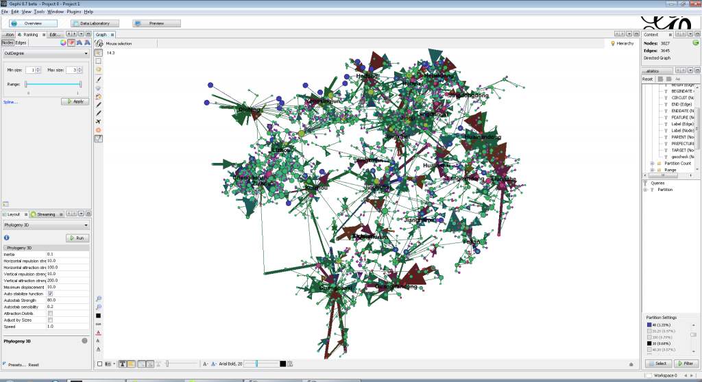

A digital medieval China
Here I am in Honolulu at the Association for Asian Studies Annual Conference, where I will be presenting on Day 5, the last day, during the final set of presentations, as part of the only panel mentioning the Digital Humanities, “Digital Humanities and the Mechanics of Knowledge Production”. I’ll be presenting with, among others, Javier Cha from Harvard, who created the panel and invited me after we both presented at MIT’s Humanities + Digital conference last year, and it’s chaired by Ruth Mostern, with whom I created the Digital Gazetteer of the Song Dynasty and whose book, “Dividing the Realm in Order to Govern”, has just come out from Harvard Press. I’ll be presenting on my work to transition the DGSD from a typical hGIS database into a temporally and spatially aware network, which is sometimes referred to as a topology or geographic network.
With my own professional focus and my being surrounded by sophisticated and novel digital research in the humanities here at Stanford, it’s easy enough to think that Ian Bogost is right in that, “The digital humanities are just the humanities of the present moment.” But after having sat in on a few panels and spoken to a few traditional scholars of Asian studies, I can say that the traditional is alive, well and entrenched. Many presenters read their papers and rare was the mention of anything remotely digital, except perhaps a search feature for digitized texts.
It could be that there is a wealth of innovative work being done with digital tools and/or on digital objects, but based on my own small sampling, I think it more likely that my 1 out of roughly 800 panels is closer to the correct proportion.